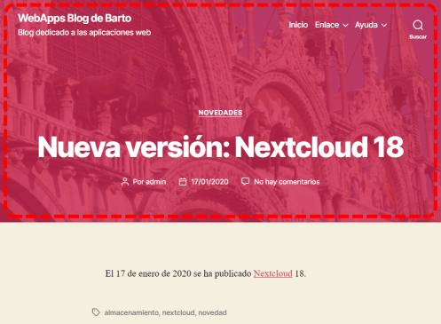
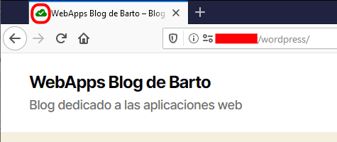
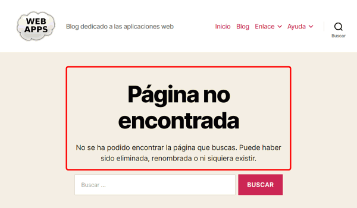
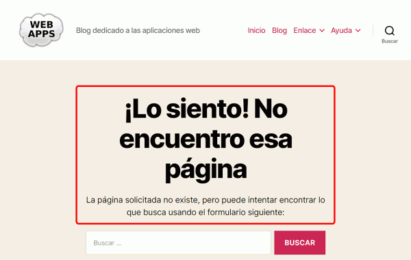
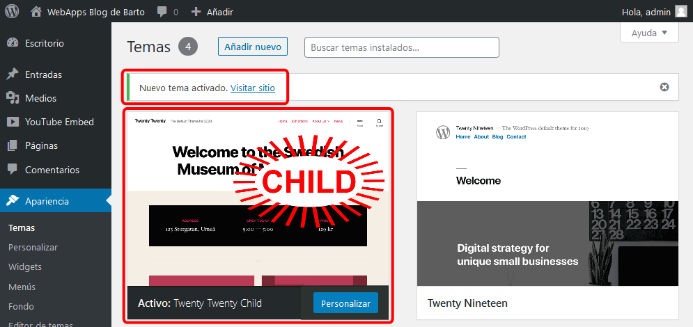
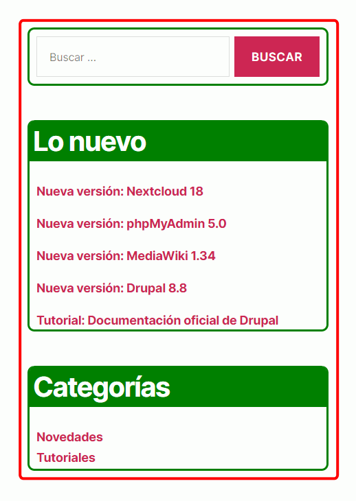
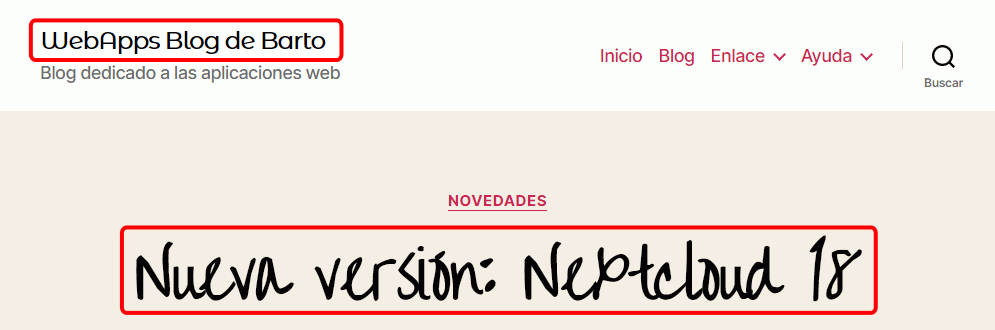

Estos ejercicios están pendientes de actualizar a la versión WordPress 5.0.
Estos ejercicios están pendientes de actualizar a la versión WordPress 5.0.
En esta lección se proponen ejercicios para conocer y utilizar WordPress. Se pueden consultar las soluciones de estos ejercicios de WordPress, aunque se recomienda intentar realizarlos primero sin recurrir a estas soluciones.
El objetivo de esta página de ejercicios es practicar el uso de temas en WordPress. Los temas permiten modificar completamente el aspecto visual de WordPress. El directorio de temas de WordPress se puede visitar en https://es.wordpress.org/themes/. Los temas se instalan y desinstalan en WordPress desde el menú Apariencia.
Los ejercicios de esta lección tratan varios aspectos relacionados:
Asocie una imagen a una de las entradas, que se mostrará en la parte superior:

El tamaño más conveniente de la imagen destacada depende del tema elegido. De acuerdo con el manual de WordPress, el tamaño recomendado para el tema Nineteen es de 2000px x 1200px .
La imagen del ejemplo es Venecia (Basílica de San Marcos). En los ejercicios siguientes se han utilizado otras imágenes de Venecia:
En este ejercicio se personalizará el tema predeterminado Twenty Nineteen.
Añada un icono al sitio web.

WordPress recomienda que la imagen del icono del sitio sea una imagen cuadrada de 512px de lado. En el ejemplo se ha utilizado esta imagen:
Añada un logotipo al sitio web.
WordPress recomienda que la imagen del icono del sitio sea una imagen cuadrada de 190px de lado. En el ejemplo se ha utilizado esta imagen:
Referencia: ¿Qué es el parallax?
Modifique el aspecto de la web configurando una portada estática para obtener un resultado similar a este:
Para ello:
A veces, aunque se haya elegido página estática como página frontal, el apartado "Opciones del tema" deja de mostrarse en el menú Personalizar, o no permite elegir el contenido de las secciones. Parece que saliendo y volviendo a entrar como usuario administrador, el problema desaparece.
Una de las novedades del tema Twenty Seventeen es que permite el usuario modificar el propio tema con CSS. En versiones anteriores, era necesario o bien editar el tema (algo desaconsejado porque una actualización del tema puede destruir el trabajo realizado) o crear un tema hijo (como se propone en esta misma lección en un ejercicio posterior). Esta nueva herramienta viene muy bien para hacer pequeñas modificaciones de estilo, pero para grandes cambios sigue siendo más aconsejable crear temas hijos.
Como las sentencias CSS se añaden a la hoja de estilo del tema, hay que tener en cuenta tanto la estructura del documento como de la hoja de estilo. La manera más sencilla de averiguar los selectores a utilizar es utilizar el inspector de Firefox (o de Chrome o de IE).
El Inspector de Firefox se abre mediante el menú o mediante la tecla F12. En la lección Herramientas de Desarrollador Web de los apuntes de informática se comentan estas herramientas.
A continuación se comenta cómo se utilizaría el Inspector de Firefox para modificar el título del blog.

Como muestra la imagen anterior (haga clic en ella para verla con más detalle) el proceso es el siguiente:
<body class="home blog wp-custom-logo wp-embed-responsive hfeed image-filters-enabled">
<div id="page" class="site">
<a class="skip-link screen-reader-text" href="#content">Ir al contenido</a>
<header id="masthead" class="site-header">
<div class="site-branding-container">
<div class="site-branding">
<div class="site-logo"><a href="http://192.168.1.4/wordpress/" class="custom-logo-link" rel="home" itemprop="url"><img width="190" height="190" ... /></a></div>
<h1 class="site-title"><a href="http://192.168.1.4/wordpress/" rel="home">WebApps blog de Barto</a></h1>
...
En el apartado "CSS adicional" si sólo se tiene en cuenta la estructura html del documento, las reglas pueden no dar ningún resultado. Por ejemplo, si se añade la regla:
h1 {
color: red;
}
... el título no cambiaría de color. Pero si utilizamos el mismo selector que se muestra en la pestaña "Computada" del Inspector
.site-title a:link {
color: red;
}
... entonces sí que cambia el color del título.
Modifique el color de los elementos principales. Por ejemplo:

En este ejercicio se modificará la traducción de WordPress al español.
WordPress utiliza GNU gettext para gestionar las traducciones. En GNU gettext hay tres tipos de archivos:
Los archivos .pot o .po son archivos de texto que se pueden editar con cualquier editor de texto plano, pero existen editores específicos como poedit. Sin embargo los archivos .mo son archivos compilados y para crearlos se necesitan las utilidades GNU gettext o programas específicos como poedit.


Los temas de WordPress pueden modificarse directamente, pero es mejor no modificar los temas directamente, ya que si los temas se actualizan, los cambios que hayamos realizado se perderán. Por ello se recomienda crear temas hijo (en inglés, child themes), de manera que las modificaciones realizadas queden a salvo en las actualizaciones.

body.has-header-image .site-title a {
color: yellow;
}

Las reglas CSS que se escriban en el archivo style.css del tema hijo se añaden a las del tema orginal.


Para modificar una plantilla de página en el tema hijo, hay que copiar la página del tema original, copiarla en la carpeta del tema hijo y modificarla.
Nota: Para saber qué código html hay que incluir en la plantilla de la página 404, se puede incluir una imagen y cambiar el color de texto en una entrada cualquiera y ver el código fuente generado.
Las páginas web pueden utilizar todo tipo de fuentes utilizando el mecanismo de las fuentes web (véase, por ejemplo, la lección lección de Fuentes web de los apuntes de HTML/CSS).
Google ofrece un servicio de alojamiento de fuentes web llamado Google Fonts, cuyo suyo evita a nuestro servidor el tráfico necesario para descargar las fuentes en los clientes. Las fuentes de Google Fonts se pueden utilizar directamente, sin necesidad de instalar ningún plugin, modificando la hoja de estilo del tema utilizado.
Para ello, se debe:
@import url(http://fonts.googleapis.com/css?family=Orbitron);
div.navigation-top {
font-family: Orbitron;
font-size: 125%;
}


El plugin Easy Google Fonts permite integrar las fuentes de Google Fonts en WordPress.
 Por escribir.
Por escribir.
{kind=link}
{kind=link}
{kind=link}
{kind=link}
{kind=link}
{kind=link}
{kind=link}
{kind=link}
{kind=link}
{kind=link}
{kind=link}